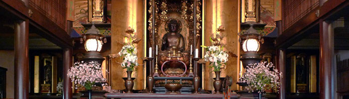
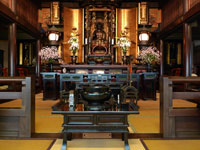
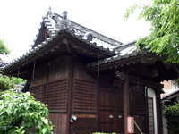
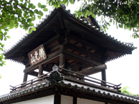
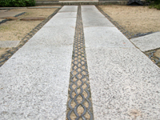
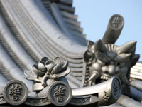
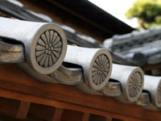

SEIGANJI TEMPLE誓願寺

美観地区から入った本通り沿いに位置する『浄土宗誓願寺』は、1849年（嘉永2年）に建立されました。本堂は、倉敷で最も古いとされています。天皇所縁の菊の瓦紋が目印の門構えをくぐり、まっすぐ進むと今度は寺名である“誓”の文字が瓦に彫られています。その名の由来は仏様の誓いである「皆を救う」という浄土宗の教えからだそうです。もともとは中国の和尚に端を発し、その一説から岡山出身の法然上人が43歳で“南無阿弥陀仏”を唱えたのがはじまりとなり、この地に浄土宗が根づきました。ここに佇んでいるとその荘厳な雰囲気に心が洗われます。日頃はつい、自分が自分がとなりがちですが、自然や家族等の「おかげがあって生きている」ということを気づかせてくれ、競争心や計算する心、我先にという気持ちが薄らいできます。
観光地でない為、境内は一般公開はされていません。
本堂

荘厳な雰囲気の本堂では、毎朝6時からお念仏を、毎週水曜日14時と毎月1日からお経があげられています。
飛梅天満宮

正門に入って右手には飛梅天満宮あります。これは、倉敷代官所から移動されたものです。
鐘楼

本堂より左手奥には「佛光山」と書かれた鐘楼があります。毎日18時には6度の鐘と2度の消息が撞かれています。
境内の道

約100年毎に葺き直されて不要になった瓦は、境内の地面に埋め込まれています。
誓の瓦紋

本堂の屋根瓦には「誓」の文字が印された瓦紋が参拝された方々を出迎えてくれます。
菊の瓦紋

天皇所縁の菊花紋は、その昔使用することが許された由緒正しき場所であることが伺えます。
一覧に戻る